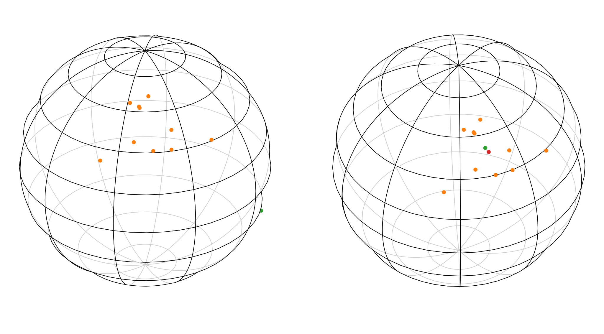

Machine Learning on Spherical Manifold
There are a variety of application where an \(n\)-dimensional hypersphere is a natural domain for data. For example images from 360-degrees cameras or weather on the Earth. But basic machine learning algorithms are expected to take place on regular Euclidean space, therefore it is hard to preserve the spherical structure of the domen. In order to overcome this difficulty, we can introduce additional structure to basic optimization algorithms like Gradient Descent, to enforce them to work on sphere.
Problem Statement
The basic gradient descent algorithm optimazes the parameters of function \(f_{\theta}\) via introducing the loss function, and computing the direction of steepest descent of that function with respect to parameters. This function maps a pair (prediction, target) to non-negative real value \(\mathcal{L} : \mathcal{Y} \times \mathcal{Y} \to \mathbb{R}^+_{0}\), this value shows how good the hypothesis (e.g. neural network) approximates the target labels distribution.
But this immidiatly introduces the problem if we want to optimize the parameters that live on some sort of manifold. The optimizer is completely unaware of geometrical structure of our data, and therefore can easily move parameters out of manifold to embedding space. Even tough there are implicit regularization from optimization algorithm (SGD find the solution with smallest \(L^2\) norm) and explicit regularization from function structure (for example convolution operator must respect translation symmetry), which narrows the search space, it's not enough to ensure that parameters will respect out geometrical priors (stay on sphere).
For example let's take a look at simple function with parameters vector \([\theta_{0}, \theta_{1}]^\top\), and we want the length of this vector to always be \(1\). So our parameters must live on a one-dimensional spherical manifold \(S^1\), embedded in \(\mathbb{R}^{2}\). Often it's treated like 2D object, because of embedding space \(\mathbb{R}^{2}\), but circle itself can be parametrized with single angle value, so it's actually the 1D manifold. But working with manifold in intrinsic coordinates is more difficult, because there is no general coordinate system to store them as arrays. So we will stick with embedding space coordinates and just introduce constraints for vectors.
The illustration below, shows points on circle \(u\) and tangent vector at this point \(v\), the basic vector sum is shown on the left, and as we can see the resulting vector is no longer on circle. The right image shows how we would like to fix our problem: a mysterious map \(\exp\), which takes the vector from tangent space \(T_{u}S\) and creates the shortest path on manifold \(\gamma(t)\) in direction of vector \(v\) and with same magnitude.

Solving Plan
Now, when we understand the problem, the solution comes naturally:
- Perform basic gradient descent and obtain gradient vector \(\nabla_{\theta}\mathcal{L}\), which often points in arbitrary direction.
- Project gradient vector to tangent space at points \(u\).
- Wrap this vector around the sphere, and move the point in this direction (use exponential map).
Euclidean Gradient via Autograd
Obtaining the Euclidean gradient is done using PyTorch autograd tool, which builds dynamic computation graph of an expression, and computes all partial derivatives automatically. For example consider expression \(f(a, b, c) = a + b \cdot c\), compute partial derivatives with respect to each argument: \(\frac{ \partial f }{ \partial a } = 1, \frac{ \partial f }{ \partial b } = c, \frac{ \partial f }{ \partial c } = b\), and implement same in PyTorch:
a = torch.tensor(2.0, requires_grad=True)
b = torch.tensor(3.0, requires_grad=True)
c = torch.tensor(4.0, requires_grad=True)
d = a + b * c
d.backward()
print(f"a gradient: {a.grad:.3f}")
print(f"b gradient: {b.grad:.3f}")
print(f"c gradient: {c.grad:.3f}")
--- Output ---
a gradient: 1.000
b gradient: 4.000
c gradient: 3.000
Tangent Space Projection and The Exponential Map
When we have the instrument to obtain gradient, we need to come up with a way to move a point in parameter space according to the direction and magnitude of the gradient vector. To accomplish this we will first introduce the concept of geodesic of manifold. Geodesic curve \(\gamma : [a,b] \to \Omega\) is a parametrized function, that maps a real-valued "time" parameter \(t \in [a, b]\) to points on the manifold \(\Omega\), in such a way, that walking along this curve yields the shortest possible path between \(u = \gamma(a)\) on this manifold to another point \(v = \gamma(b)\) also on this manifold:
Now, the exponential map \(\exp_{u}(v)\) from a point \(u\) in the direction \(v\), is defined as a geodesic curve \(\gamma\), such that \(\gamma(0) = u, \ \gamma'(0) = v\) and \(\exp_{u}(v) = \gamma(1)\). The exponential map works only with vectors from a tangent space \(T_{u}\Omega\), so the gradient vector must be projected. Any vector at a given point can be decomposed as a sum of tangent and normal component \(g = g_{\parallel} + g_{\perp}\), so to obtain the tangent component we need to find a normal projection of gradient vector. This is very easy to do on sphere, because the point \(u\) itself is the normal to the surface, so we just need to project the gradient onto \(u\) and subtract it like this \(g_{\parallel} = g - \langle u, g\rangle \cdot u\).

Having the tangent vector, the idea of how to perform an exponential map is the following: consider the intersection of a 2D plane that goes through \(u\) and tangent vector \(v\), and our \(n\)-dimensional hypersphere, this intersection will itself be the 2D (in terms of embedding space) circle, and our vectors will form an orthogonal basis in this subspace.

Vector \(v\) is not necessary a unit length, so it must be normalized. Then the point on this circle can be decomposed in classic manner with cosine and sine, where the angle in radians is the length of \(v\), because the angle in radians is actually the length of the arc between two points (normalized by a radius).
The parameter \(t\) allows us to control how far we can go along \(v\), sphere is the perfectly symmetrical space, so there is a convenient formula, but it's not always the case. Generally speaking, the exponential map is a local transformation, so often we need to recompute the transformation at each point along the way.
Gradient Descent on Sphere
Now, when we have all necessary components, we can create an spherical version of Stochastic Gradient Descent optimizer. It's convenient to use already defined in PyTorch Optimizer class and just override the optimization step method. The full version of this and other geometric tools used here can be found at my github repository.
class RSGD(optim.Optimizer):
def __init__(self, params, manifold: Manifold, lr: float = 3e-4):
if lr <= 0.0:
raise ValueError(f"Invalid learning rate: {lr}")
defaults = dict(lr=lr, manifold=manifold)
super().__init__(params, defaults)
@torch.no_grad()
def step(self, closure) -> float | None:
"""
Performs the optimization step on given Manifolds.
"""
for group in self.param_groups:
lr = group["lr"]
manifold = group["manifold"]
for params in group["params"]:
if params.grad is None:
continue
grad = manifold.proj_v(params, params.grad)
new_params = manifold.exp_map(params, -grad, lr)
params.copy_(new_params)
To test this solution let's solve the simple optimization problem of finding the Frechet mean with respect to \(L^1\) norm on a sphere. The objective is to find such anchor point \(a\), that minimizes the following expression:
Where, \(\mathcal{N}\) is node points distribution, and \(\text{dist}\) is distance metric. On sphere with radius \(r\) the intrinsic distance is defined as \(r \cdot \arccos (\langle u, v\rangle)\) (intrinsic, because we can also measure the distance between points in embedding space, so called extrinsic distance).
Python implementation is quite straightforward at this point: initializing the random points on sphere, computing the mean distance between anchor and nodes, and update anchor position.
def spherical_l1(sphere: Sphere, nods: torch.Tensor, anchor: torch.Tensor) -> torch.Tensor:
dist = sphere.dist(nods, anchor)
mean_dist = torch.mean(dist)
return mean_dist
def optimize_spherical() -> None:
d = 3
n = 10
sigma = 1.5
nods = torch.ones(n, d)
nods = nods + torch.randn_like(nods) * sigma
S2 = Sphere(3)
nods = S2.proj_x(nods)
euclidean_anchor = S2.proj_x(nods.mean(dim=0, keepdim=True))
anchor = torch.randn(1, d)
anchor = S2.proj_x(anchor)
anchor = anchor.detach().requires_grad_(True)
epochs = 1000
lr = 1e-2
optimizer = RSGD([anchor], S2, lr)
for epoch in range(epochs + 1):
optimizer.zero_grad()
loss = spherical_l1(S2, nods, anchor)
loss.backward()
optimizer.step()
if epoch % 50 == 0 and epoch != 0:
lr = lr * 0.95
print(f"[{epoch}/{epochs}] Mean L2 Distance: {loss.item():.4f} | New Learning Rate: {lr:.4f}")
print(f"RSGD Mean Distance: {spherical_l1(S2, nods, anchor).item():.4f}")
print(f"Euclidean Mean Distance: {spherical_l1(S2, nods, euclidean_anchor).item():.4f}")
--- Output ---
...
RSGD Mean Distance: 0.2430
Projected Extrinsic Mean Distance: 0.2439
The initialization state showed on the left, the green point denotes an anchor, when orange points are nodes. The right image shows the optimized state, and red point is the projected back on sphere extrinsic mean.
